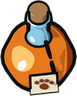
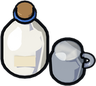
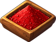
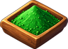
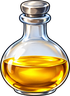
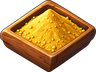
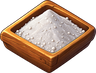

Potion Bottle
Obtaining
- Bought from Lir the Merchant for 5 gold
- Bought from Merchant Ilsa for 5 gold
- Bought from Sister Hildegard for 5 gold
- Bought from Mother Nettle for 5 gold
- Bought from Mother Hild for 5 gold
- Bought from Father Tomas for 5 gold
Used to make
| Item | Skill | Needs | Where |
|---|---|---|---|
 Beast Tonic ×1 | Alchemy 5 | 1 ×  Milk | Alchemy Lab |
| Alchemy 20 | 1 × | Alchemy Lab | |
| Alchemy 1 | 1 × | Alchemy Lab | |
| Alchemy 10 | 1 ×  Red Sand, 1 × | Alchemy Lab | |
| Alchemy 20 | 1 ×  Green Sand, 1 × | Alchemy Lab | |
 Yellow Potion ×1 | Alchemy 30 | 1 ×  Yellow Sand, 1 × | Alchemy Lab |
| Alchemy 45 | 1 × | Alchemy Lab | |
| Alchemy 60 | 1 ×  White Sand, 1 × | Alchemy Lab |